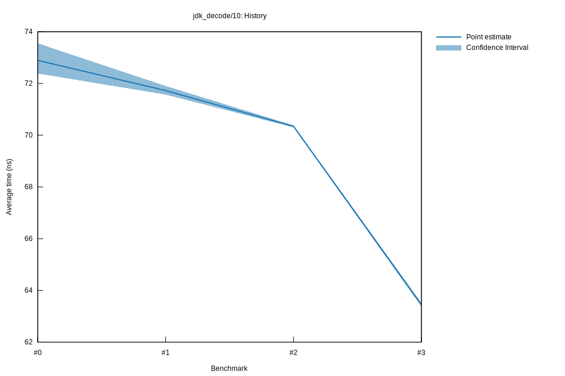

# 32022-10-16T20:11:57+03:00
|
Lower Bound |
Estimate |
Upper Bound |
| Value: |
63.37ns |
63.44ns |
63.52ns |
| Throughput: |
240.78MiB/s |
240.51MiB/s |
240.24MiB/s |
| Change in Value: |
-9.9166% |
-9.7846% |
-9.6686% |
| Change in Throughput: |
+11.008% |
+10.846% |
+10.703% |
No change in performance detected.
# 22022-10-16T17:31:01+03:00
|
Lower Bound |
Estimate |
Upper Bound |
| Value: |
70.31ns |
70.34ns |
70.38ns |
| Throughput: |
217.03MiB/s |
216.92MiB/s |
216.80MiB/s |
| Change in Value: |
-1.9053% |
-1.7036% |
-1.5110% |
| Change in Throughput: |
+1.9423% |
+1.7332% |
+1.5342% |
No change in performance detected.
# 12022-10-15T17:21:42+03:00
|
Lower Bound |
Estimate |
Upper Bound |
| Value: |
71.57ns |
71.72ns |
71.90ns |
| Throughput: |
213.20MiB/s |
212.74MiB/s |
212.21MiB/s |
| Change in Value: |
-6.5025% |
-4.6593% |
-3.0667% |
| Change in Throughput: |
+6.9547% |
+4.8870% |
+3.1637% |
No change in performance detected.
# 02022-10-15T16:55:54+03:00
|
Lower Bound |
Estimate |
Upper Bound |
| Value: |
72.39ns |
72.89ns |
73.55ns |
| Throughput: |
210.80MiB/s |
209.33MiB/s |
207.45MiB/s |